Setouchi, Okayama: things to do, food and stays
Setouchi · Okayama
Setouchi
Highlighted on the Okayama map.

Stay
ホテルリマーニ
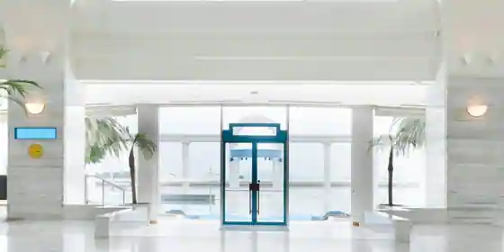
Hotel Rimani
Hotel in Ushimado, Setouchi with scenic views.
七二七 inlet
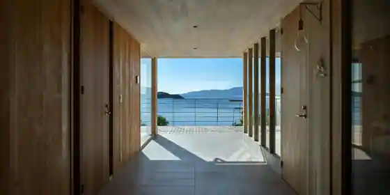
Shichi Ni Shichi inlet
Inn in Ushimado, Setouchi with one group per day.
seppa
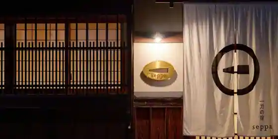
seppa
Tohito｜Setouchi
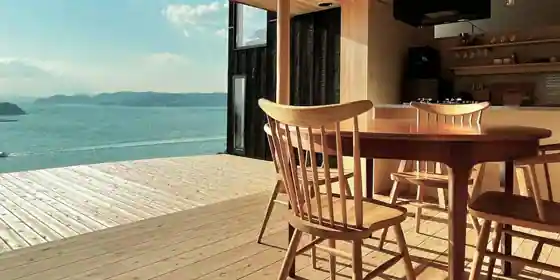
Tohito | Setouchi
Inn in Ushimado, Setouchi with one group per day.
ホテル旬香 瀬戸内牛窓リゾート
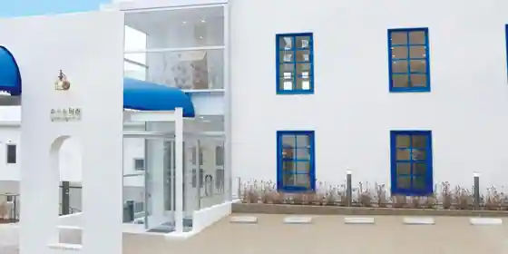
Hotel Shunko Setochi Ushimado Resort
ペンション くろしお丸
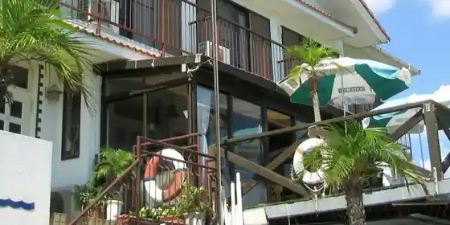
Pension Kuroshio Maru
ＬａＰｉｒａｔａーラ・ピラーター
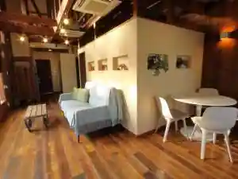
Lapirata Ra Pirata
ペンション アンフォーラ
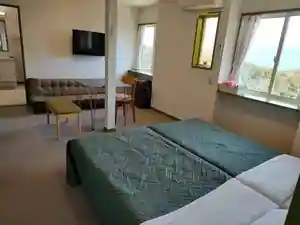
Pension Anfora
ペンション ポッケ
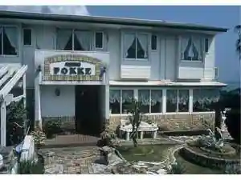
Pension Pokke
Pension in Ushimado, Setouchi with pet-friendly rooms.
アレーズド・ヴィラSETOUCHI
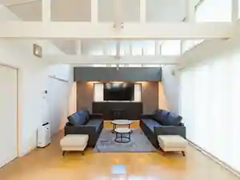
Arezudo Villa SETOUCHI
Inn in Ushimado, Setouchi with a sauna.
ワンちゃんと泊まる宿 ラハイナ
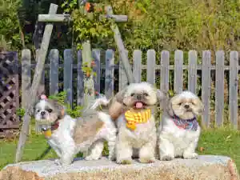
Wan Chanto Toma Ru Yado Rahaina
福岡屋旅館
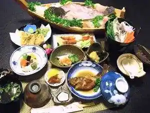
Fukuoka Ya Ryokan
Dining
ザ テラス
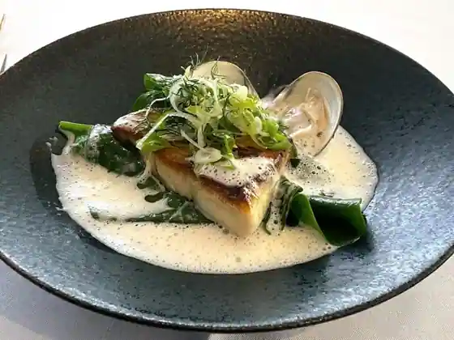
Za Terrace
牛窓ジェラート工房 コピオ
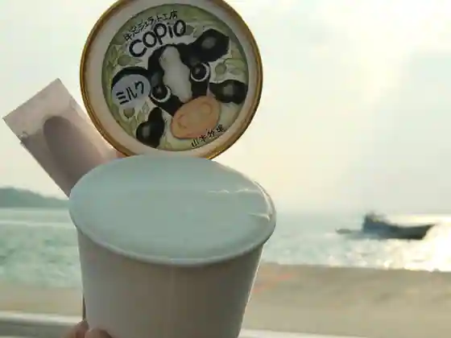
Ushimado Jierato Kobo Kopio
キノシタショウテン
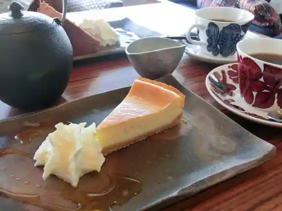
Kinoshitashouten
一文字うどん
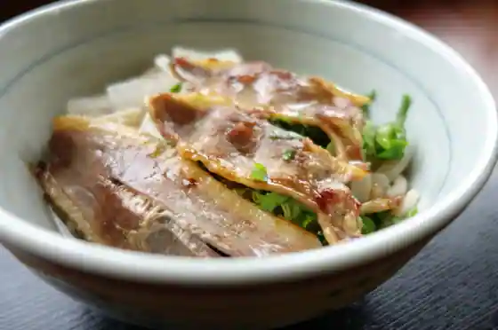
Hitomoji Udon
ロッサ
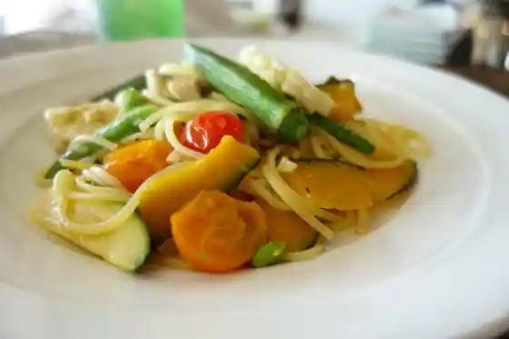
Rossa
山の上のロースタリ
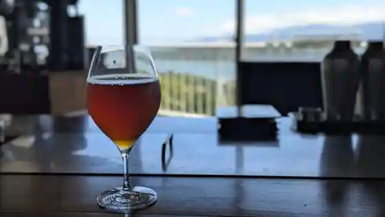
Yama No Ueno Rosutari
備前いろは堂
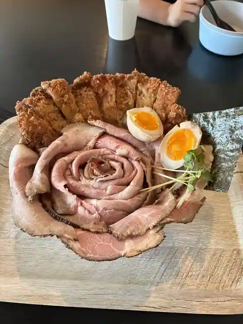
Bizen Iroha Do
天ぷら楓
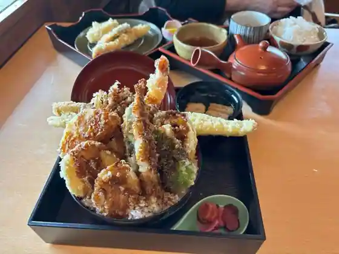
Tenpura Momiji
中光商店
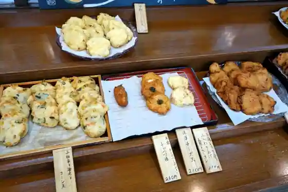
Naka Hikari Sho
キッチン かいぞく
Kitchen Kaizoku
蕎麦 う垣
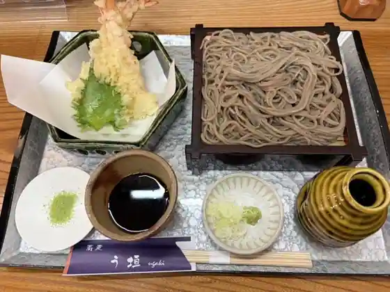
Soba U Kaki
レストラン まつもと
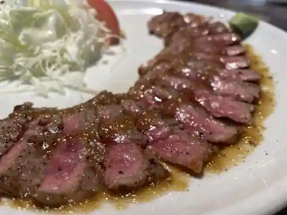
Restaurant Matsumoto
ちょい蕎麦庵
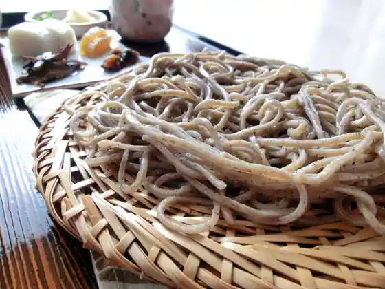
Choi Soba Iori
マンチズピッツェリア
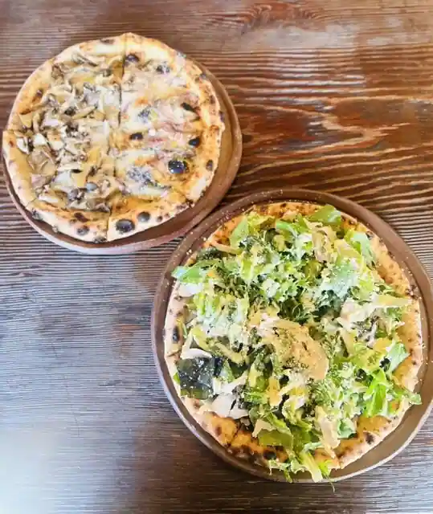
Manchizu Pizzeria
海辺のtrees
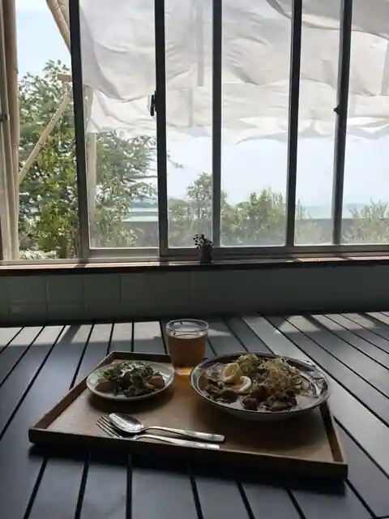
Umibe No trees
うどん香麦
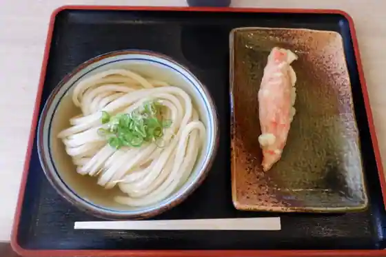
Udon Kaori Mugi
岡山夢菓匠敷島堂 邑久総本店
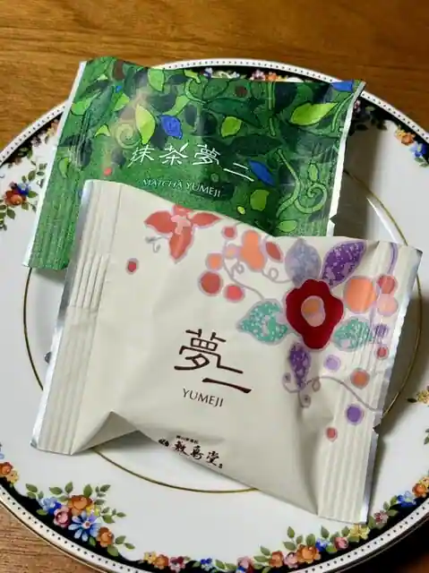
Okayama Yume Kasho Shikishima Do Oku So Hon
中華そば まるや 長船店
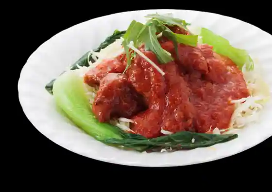
Chuka Soba Maruya Osafune
La Pirata ラ・ピラータ
La Pirata Ra Pirata
焼肉 ふくざき
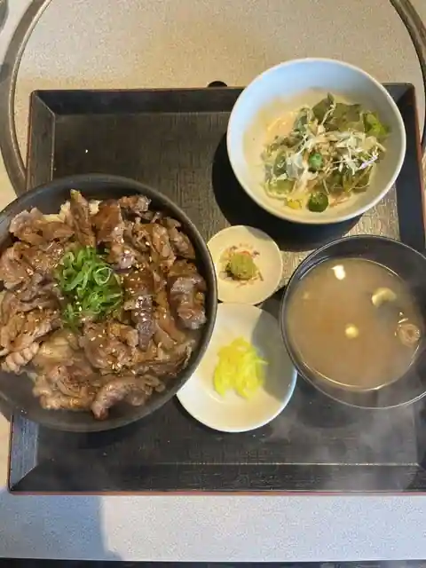
Yakiniku Fukuzaki
てれやカフェ
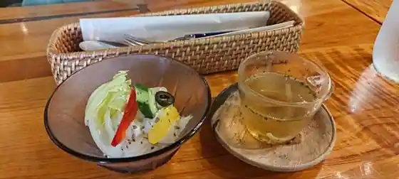
Tereya Cafe
お好み焼 三笠
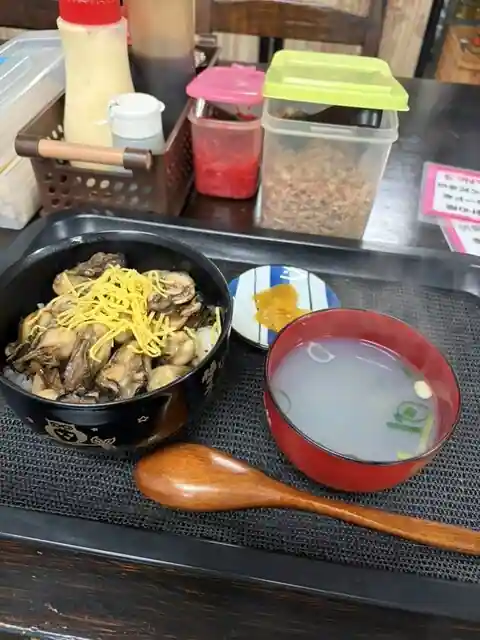
O Konomi Yaki Mikasa
パン工房むくむく
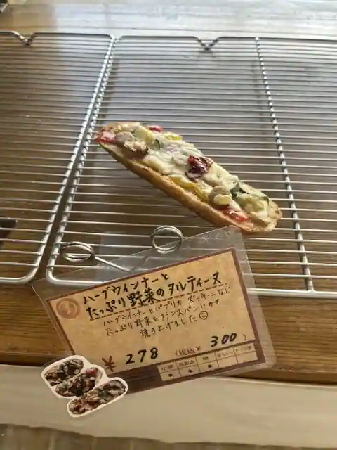
Bakery Kobo Mukumuku
TEPEMOK CAFE
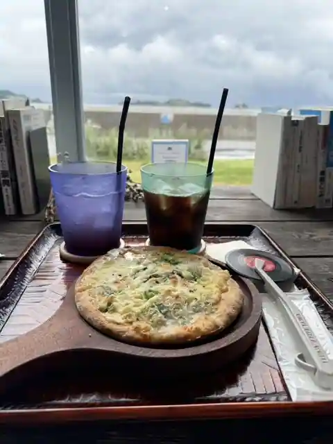
TEPEMOK CAFE
Sights
Kuro Shima Viinasurodo

Nippon'ichi no Dagashi Uriba

Ushimado Oriibu Sono

Ushimado no Streetscape

Maejima
Bizen Osafune Token Village Bizen Osafune Token Museum
Roadside Station Ipponmatsu Tembo Sono
Shiomachi to Kon Tori (Ushimado no Streetscape)
ushimado TEPEMOK (Ushimado Teremoku)
Roadside Station Kuroi Yama Green Park
Hatakeyama Seika Toyohara Kojo
Kuroi Yama Mikan Kari
Setouchi Kanko Center Setouchi Kirari Kan
Ushimado TARI
Ushimado Shrine
Ushimado Kenshu Center Kariyonhausu
Okaki Tokoro Kibi no Sha (Hatakeyama Seika Toyohara Kojonai)
Ushimado Beach
National Ryoyojo Nagashima Aisei Sono
Setouchi Furutsu Garden
Yumeji Kyodo Art Museum Yumeji Seika Memorial Museum Shonen Sanso
Setouchi Ritsu Art Museum
Seto no Akebono (Nippon no Asahi Hyakusen)
Osafune Utsukushii Mori
Hotel Rimani
Bizen Fukuoka (Machinami Mi)
Kanpu Togei Hall
Kuro Shima
Ushimado Kaiyu Bunka Kan
Honren Tera
Ushimado no Yuhi (Nippon no Yuhi Hyakusen)
Ya Yorigahama (Nishiwaki Coast)
Kyo I Yama Myoko Tera
Ushimado Machiaruki Gaido
Maejima Ferii
Oku Supotsu Park Oku B&G Kaiyo Center
Ushimado Yottohaba
Bizen Fukuoka Annai Gaido Kyokai
Nakazaki Tei
B-Tree
Bizen Yaki Gyararii Wakamiya
Ushimado Munrodo
Ushimado Atoharumonia (The Reflective eye)
Koso Shuzo (Kabu) Chizu Kura
Osafune Rentasaikuru (Takehara Yakkyoku)
Setouchi Tami Library Momiwa Plaza (Setouchi Ritsu Library)
Iwaya Yama Lookout
Machikado Myuze Ushimado Bunka Kan (Kyu Chugokuginko Ushimado Branch)
Hironori Tera
Setouchi Kirei Taiyokohatsuden Tokoro
Ushimado Atoharumonia (Minato Kaze no Sakasu (Harborwind Circus))
Jigan In (Osafune Tosho Bodai Tera)
National Ryoyojo Oku Komyo Sono
Mushiaki Yaki Kamamoto (Kuroi Sen Hidari, Kuroi Keiun, Kuroi Hiroshi)
Toishi Castle Ruins
Ushimado Atoharumonia (Randevu)
Osafune Supotsu Park
Fukuoka Castle Ruins
Okayamaken Ushimado Yottohaba Club Hausu
Osafune B&G Kaiyo Center
Ushimado Uotatoreiru
Ushimado Shiikayakkusu
Sue Kodai Kan
Akihime Ichigo to Yuki JAS Asahi Kome MERRY BERRY
Kifune Shrine
Taiyu Yamadai Ga Shima Tera
Kanpu Koyo Ato Gun
Ten'o Sha Token Forest Yugei Shrine
Airisu Bizen Yaki Tobo
Kinosuke Gyararii
Okayamaken Seishonen no Shima Kuro Shima
Tabuchi Ichigo Sono
Uedera Yama Yokyo Tera
Nishiki Umi Teibo
Tsukiyama Burial Mound
Yoko Yama Sei En Tera
Chibetto Bo Kama
Hana Mitsudera Yama Burial Mound